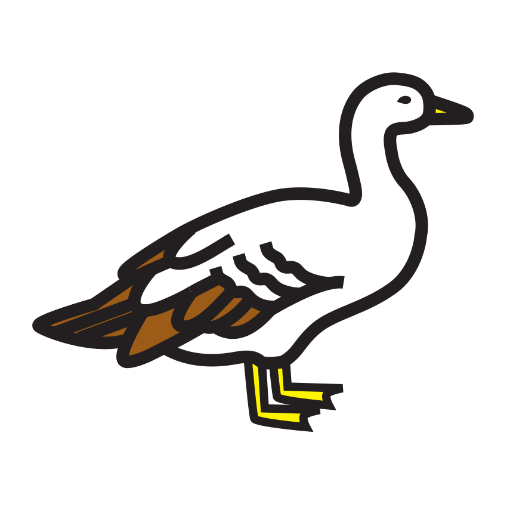
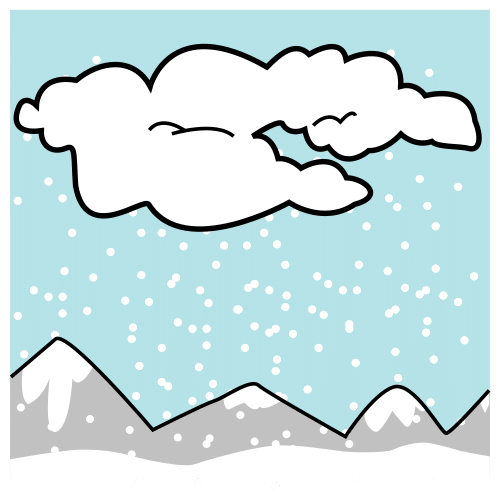

Prénom : Date :
Période 3 · Entraînement A1
Phonologie — phonèmes voyelles
Les deux montagnes des sons ★ je m’entraîne
Sous-objectif : discriminer les phonèmes [a] et [i] (prépare la fiche d’évaluation 3.3).
Consigne : 1. Relie chaque image à sa montagne : la montagne du « a » ou la montagne du « i ». Attention, certains mots ont les deux sons : relie-les aux deux montagnes ! 2. Entoure les images où tu entends [o]. 3. Dans la bande, entoure toutes les lettres « a », dans les deux écritures.
1
A montagne du « a »
I montagne du « i »
3
A aA o a e A i a u O a A m a
★ Défi : MARMOTTE : combien de fois entends-tu « a » ?
Compétence : identifier les phonèmes [a] et [i] dans des mots.Seul ☐ · Avec aide ☐ · À revoir ☐
Prénom : Date :
Période 3 · Entraînement A2
Lettres — les 3 écritures
Le mémory des lettres ★ je m’entraîne
Sous-objectif : reconnaître une même lettre en capitale et en script (prépare la fiche d’évaluation 3.4). La maîtresse ajoute la cursive à la main au dos.
Consigne : Découpe toutes les cartes. Retourne-les et joue au mémory : retrouve les paires (grande lettre + petite lettre). Quand tu gagnes une paire, nomme la lettre !
★ Défi : avec les cartes, compose les mots LAMA et MER, puis un mot de ton choix.
Compétence : apparier les graphies d’une même lettre ; nommer les lettres.Seul ☐ · Avec aide ☐ · À revoir ☐
Prénom : Date :
Période 3 · Entraînement A3
Écriture cursive — lettres rondes
Les lettres rondes comme des boules de neige ★ je m’entraîne
Sous-objectif : tracer c, o, a, d et les enchaîner (prépare la fiche d’évaluation 3.5).
Consigne : 1. Suis le modèle écrit au début de chaque ligne et continue. 2. Continue les bandes : les ronds de plus en plus petits, les créneaux, les zigzags des sommets. 3. Entoure ta plus belle lettre ronde.
1
modèle : c c c · o o o
modèle : a a a · d d d
modèle : la · le · il a
modèle : le lac · la dame
Compétences : lettres rondes en cursive ; motifs graphiques.Seul ☐ · Avec aide ☐ · À revoir ☐
Prénom : Date :
Période 3 · Entraînement A4
Mathématiques — vers 10
Dix flocons dans la boîte ★ je m’entraîne
Sous-objectif : écrire les chiffres jusqu’à 10 et compléter des boîtes de 10 (prépare la fiche d’évaluation 3.8).
Consigne : 1. Repasse puis écris les chiffres. 2. Dessine les flocons qui manquent pour remplir chaque boîte de 10. 3. Colorie exactement autant de flocons que le nombre.
2
| | j’ai ajouté |
| | j’ai ajouté |
| | j’ai ajouté |
★ Défi : la fusée-luge décolle ! Écris le compte à rebours : 10 · · 8 · · 6 · · 4 · · 2 ·
Compétences : écrire 9 et 10 ; compléments à 10 ; décomptage.Seul ☐ · Avec aide ☐ · À revoir ☐
Prénom : Date :
Période 3 · Entraînement A5
Mathématiques — bande numérique
Avant, après ★ je m’entraîne
Sous-objectif : connaître le voisinage des nombres jusqu’à 10 (prépare la fiche d’évaluation 3.9).
Consigne : 1. Complète les deux télésièges. 2. Écris le nombre qui vient juste avant et juste après. 3. Range les nombres du plus petit au plus grand.
3
8 · 3 · 10 · 5 · 7 →
6 · 9 · 2 · 4 · 1 →
Compétences : suite écrite jusqu’à 10 ; voisins ; ranger des nombres.Seul ☐ · Avec aide ☐ · À revoir ☐
Prénom : Date :
Période 3 · Entraînement A6
Le monde — l’hiver des animaux
Que font-ils en hiver ? ★ je m’entraîne
Sous-objectif : connaître les stratégies des animaux face au froid (prépare l’oral de l’évaluation 3 et la fiche 3.15 sur le corps).
Consigne : 1. Relie chaque animal à ce qu’il fait en hiver. 2. Entoure les vêtements que tu mets pour aller à la montagne en hiver. 3. Coche OUI si c’est vrai, NON si c’est faux.
1
la marmotte
l’oiseau migrateur
le chamois
il reste actif, son pelage épaissit
elle dort tout l’hiver
il part vers les pays chauds

3
| La marmotte dort tout l’hiver. | OUI | NON |
 La neige, c’est de l’eau gelée. | OUI | NON |
| Le chamois part en avion dans les pays chauds. | OUI | NON |
Compétences : adaptation des animaux au froid ; se protéger du froid.Seul ☐ · Avec aide ☐ · À revoir ☐
Prénom : Date :
Période 3 · Entraînement B1
Phonologie — localiser un phonème
Début, milieu ou fin ? ★★ je consolide
Sous-objectif : localiser précisément un phonème voyelle (prépare la fiche d’évaluation 3.3, exercice 2).
Consigne : Pour chaque mot, mets une croix là où tu entends le son demandé : au début, au milieu ou à la fin.
| Le son | Le mot | Début | Milieu | Fin |
|---|
| [a] | lama | | | |
| [a] | aigle | | | |
| [i] | ski | | | |
| [i] | igloo | | | |
| [o] | sommet | | | |
| [u] |  troupeau troupeau | | | |
| [o] | moto | | | |
| [i] | piste | | | |
★ Défi : trouve un mot où tu entends [i] au début ET à la fin (indice : un jeu d’hiver sur la glace… le « ice » ? demande à la maîtresse !).
Compétence : localiser un phonème voyelle dans un mot.Seul ☐ · Avec aide ☐ · À revoir ☐
Prénom : Date :
Période 3 · Entraînement B2
Écrit — reconstitution et encodage
Je fabrique les mots de la montagne ★★ je consolide
Sous-objectif : composer un mot en écoutant ses sons, avec des lettres mobiles (prépare la fiche d’évaluation 3.7).
Consigne : Découpe les lettres. Dis chaque mot lentement, puis colle les lettres dans l’ordre des sons : LUGE, puis MOTO. Enfin, écris LAMA tout seul dans les grandes cases.
✂ - - - - - - - - - - - - - - - - - - - - - - - - - - - - - - - - - - - - - - - - - - - - - - - - - - - - - - - - - - - - - - - - - - - -
Compétence : encoder des mots transparents avec des lettres mobiles puis au crayon.Seul ☐ · Avec aide ☐ · À revoir ☐
Prénom : Date :
Période 3 · Entraînement B3
Écriture cursive — le prénom
Mon prénom s’entraîne ★★ je consolide
Sous-objectif : automatiser le prénom en cursive avec modèle (prépare la fiche d’évaluation 3.5, puis 4.5 sans modèle).
Consigne : 1. Écris ton prénom trois fois en suivant le modèle. 2. Écris les petits mots en cursive. 3. Cache le modèle et essaie une fois de mémoire ! 4. Écris les lettres rondes que la maîtresse dicte (c, o, a, d).
modèle : mon prénom en cursive (écrit à la main)
modèle : la · le · il a du
modèle : le lac est gelé
De mémoire, sans regarder :
4
Compétence : écrire son prénom en cursive, vers l’automatisation.Seul ☐ · Avec aide ☐ · À revoir ☐
Prénom : Date :
Période 3 · Entraînement B4
Mathématiques — compléments à 10
La boîte à glaçons ★★ je consolide
Sous-objectif : automatiser les compléments à 10 et comparer des nombres écrits (prépare les fiches d’évaluation 3.8 et 4.8).
Consigne : 1. Écris combien il manque de glaçons pour faire 10. 2. Entoure le nombre le plus grand de chaque paire. 3. Complète les doubles. 4. Dominos : dessine les points qui manquent pour faire 10.
1
7 + = 10 ·
5 + = 10 ·
9 + = 10 ·
2 + = 10
2
6 ou 9 · 8 ou 5 · 10 ou 7 · 4 ou 7
3
5 et 5 font · 4 et 4 font · 3 et 3 font
Compétences : compléments à 10 ; comparaison de nombres écrits ; doubles.Seul ☐ · Avec aide ☐ · À revoir ☐
Prénom : Date :
Période 3 · Entraînement B5
Mathématiques — problèmes d’écart
De plus, de moins ★★ je consolide
Sous-objectif : comprendre « de plus » et « de moins » (prépare la fiche d’évaluation 3.10).
Consigne : 1. Pierre a 4 boules de neige. Julie en a 2 de plus : dessine les boules de Julie et écris son nombre. 2. Sacha a 2 boules de moins que Pierre : dessine et écris. 3. La marmotte était sur la case 5 et a avancé de 3 : colorie sa case d’arrivée. 4. 9 skieurs sont sur la piste, 3 rentrent au chalet : barre-les et écris le reste.
Compétences : écarts « de plus/de moins » ; déplacement sur la bande ; retrait.Seul ☐ · Avec aide ☐ · À revoir ☐
Prénom : Date :
Période 3 · Entraînement B6
Mathématiques — motifs évolutifs
Les frises qui grandissent ★★ je consolide
Sous-objectif : comprendre la règle d’un motif évolutif et en créer un (prépare la fiche d’évaluation 3.13).
Consigne : 1. Continue chaque frise. 2. Invente ta propre frise qui grandit et explique ta règle à un camarade.
3L’escalier des glaçons grandit d’une marche à chaque fois. Dessine la tour suivante :
★ Défi : la frise continue… Combien de ronds dans le paquet numéro 5 ?
Compétence : prolonger et créer un motif évolutif, anticiper.Seul ☐ · Avec aide ☐ · À revoir ☐
Crédits des images
Les illustrations de ce cahier sont des pictogrammes Mulberry Symbols (Paxtoncrafts Charitable Trust, licence CC BY-SA 4.0, mulberrysymbols.org) et des pictogrammes ARASAAC (auteur : Sergio Palao, propriété du Gouvernement d’Aragon, Espagne, licence CC BY-NC-SA, arasaac.org), complétés des images suivantes. Merci à leurs auteurs et autrices.
- flocon : « Snowflake SVG animation » (Openverse, adapté : couleur, sans animation) — Denis Giffeler, licence BY-SA 4.0.